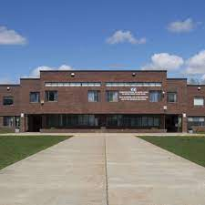

LTM's History

Lake of Two Mountains High School, which is located at 2105 Guy Street in the town of Two-Mountains,
was build in 1983; it replaced the old building with the same name which was located at 203 14th
Avenue.
This high school now has hundreds of students, which come from a variety of towns such as:
Two-Mountains, St-Eustache, Sainte-Marthe-sur-le-Lac, St-Joseph, Oka, Mirabel, and much more.
Clubs And Activities

Although this school is particularly small, we have a wide array of school activities such as Robotics, Woodworking, Writer’s club, Yearbook committee, and more. There are even sports teams such as Basketball, Hockey, Futsal, etc. These extracurricular activities are greatly enjoyed by students all over the school.
Ontop of the many extra curricular activities, LTMHS organises numerous outings for its students. For example it isn’t unusual for students in higher grade levels to visit locations outside of the country for fun and educational purposes. In addition to this there are smaller trips for any grade class, which allow students to visit nearby cities, go skating, or even go to a Halloween carnival!